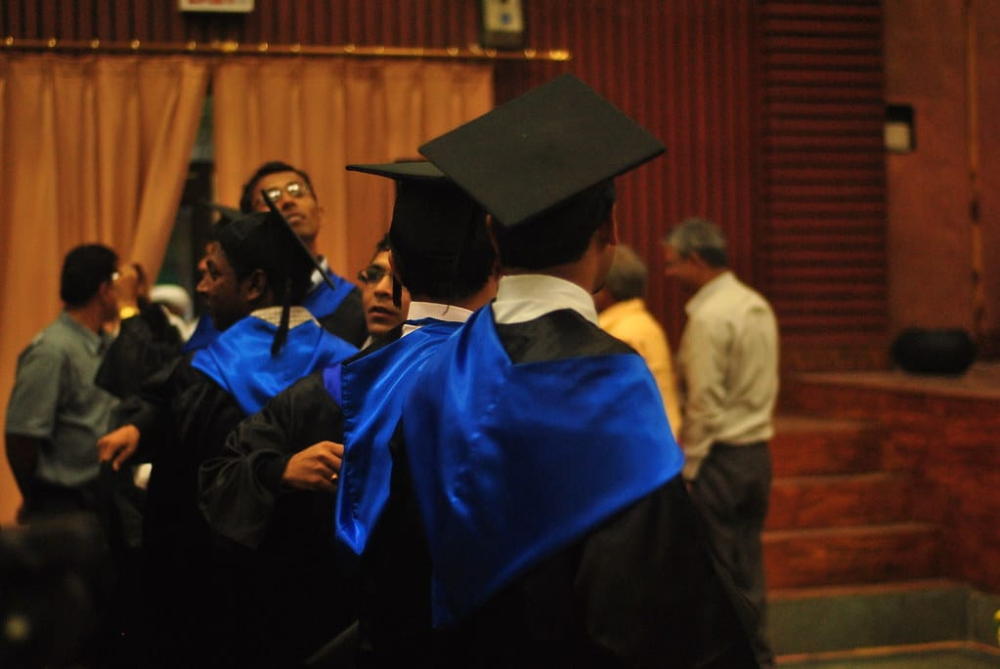
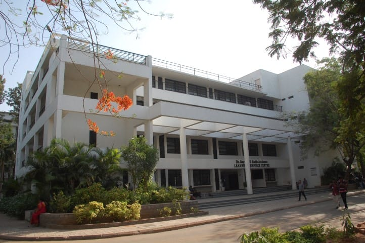

Three, every year.
Acumen 2026.
The college's flagship technical symposium — paper presentations, hackathons, coding contests, robotics competitions, and departmental technical events across all seven engineering disciplines.
Draws over 3,000 participants from engineering colleges across Telangana, Andhra Pradesh, and Karnataka. Corporate sponsors provide prize pools and internship offers to winning teams.

Euphoria 2026.
The college's oldest continuously-run event — a three-day cultural festival featuring music, dance, theatre, literary competitions, fine arts, and the traditional-day parade that has become the emotional signature of every graduating batch.
Celebrity headliners in past editions have included A.R. Rahman's band, Karsh Kale, and MTV Unplugged sessions. The event operates on a fully student-run committee under a Vice-Principal's oversight.

Kriti 2026.
A curated exhibition of student work spanning architecture models, photo essays, engineering installations, painting, sculpture, and multimedia. Kriti is the youngest of the three flagships and has quietly become the college's most critically-praised event.
Previous editions have featured collaborations with local artists' collectives (Kalakriti, Muse Art Gallery) and been reviewed in The Hindu, Deccan Chronicle, and design publications.
